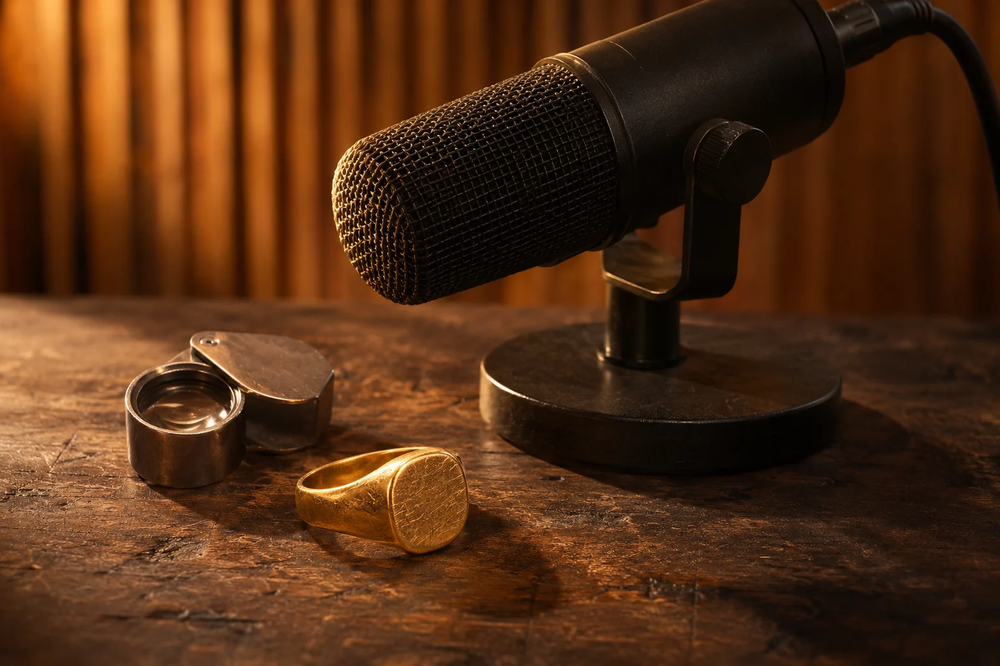
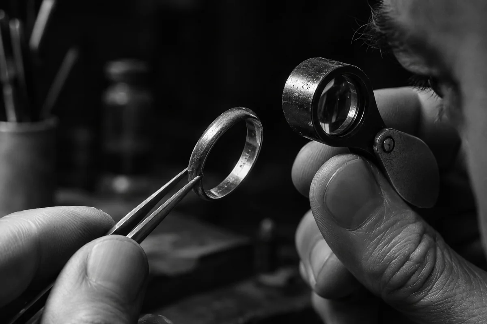

Episodenpartner
Dietmar nennt dein Unternehmen als Unterstützer der Folge. In der Folgenbeschreibung führt ein Link zu deiner Website.

Der Videocast mit Dietmar Vogelmann
Dietmar Vogelmann holt Goldhändler, Goldschmiede und bekannte Gäste an einen Tisch. 45 Minuten für ungewöhnliche Funde, knifflige Entscheidungen und Geschichten aus der Schmuckbranche.

Das Format
An einem Ring lässt sich eine ganze Folge erzählen. Der Händler schaut auf die Legierung, die Goldschmiedin auf die Fassung, der Besitzer erinnert sich an die Person, die ihn getragen hat. Bei Goldgezwitscher ist Zeit für alle drei Perspektiven.

Mögliche Fragen an die Gäste
Was verraten die Punze, die Verarbeitung und der Zustand? Und wann lohnt es sich, für ein geerbtes Stück jemanden zu suchen, der es weiterträgt?
Beim Blick in einen Stein fallen Einschlüsse und kleine Beschädigungen auf. Welche Schlüsse zieht ein Fachmann daraus, und wann braucht es einen Laborbericht?
Manche Stücke kommen in die Werkstatt, andere in die Schmelze. Wer trifft diese Entscheidung, und woran macht er sie fest?
Über uns
Dietmar ist Goldhändler in Karlsbad bei Karlsruhe. Bei Nachlassgold kommen Menschen mit geerbtem Schmuck, Münzen oder einem einzelnen Ring zu ihm. Er prüft die Stücke und erklärt, wie aus Feingehalt, Gewicht und Tageskurs sein Angebot entsteht.
Wer ihn von TikTok oder Instagram kennt, kennt auch die Fragen, die dabei aufkommen. Was bedeutet die Zahl auf der Innenseite eines Rings? Warum werden zwei ähnlich aussehende Stücke unterschiedlich bewertet?
Für Goldgezwitscher wechselt Dietmar die Rolle und stellt selbst die Fragen. Seine Gäste bringen ihre eigene Sicht mit. Im Video lässt sich dabei auch zeigen, worüber sie gerade sprechen.
Mehr über Dietmars Arbeit bei Nachlassgold
Crowdfunding auf Startnext
Für den Start von Goldgezwitscher plant Dietmar eine Crowdfunding-Kampagne. Wer die ersten Folgen möglich machen möchte, kann sich den 1. Dezember vormerken.
Start im Kalender merkenFür Sponsoren
Ein Juwelier, eine Goldschmiede oder ein Unternehmen aus der Edelmetallbranche kann gezielt eine einzelne Folge begleiten. So könnte eine Zusammenarbeit für eine Episode aussehen.
Dietmar nennt dein Unternehmen als Unterstützer der Folge. In der Folgenbeschreibung führt ein Link zu deiner Website.
Zusätzlich zur Nennung und Verlinkung erscheint dein Logo im Video. Dietmar stellt dein Unternehmen in einem kurzen, gekennzeichneten Werbeblock vor.
Du hast ein bestimmtes Thema im Kopf? Schreib Dietmar, wer ihr seid und welche Folge zu euch passen würde. Die Einzelheiten besprecht ihr direkt.
Sponsoring bei Dietmar anfragen

Social Media & Kontakt
Hier findest du Dietmar.
Auf seinen Feingold-Vogel-Kanälen gibt Dietmar Einblicke in den Goldhandel und erklärt, worauf er beim Bewerten von Schmuck achtet.
Datenschutz zu diesen Links